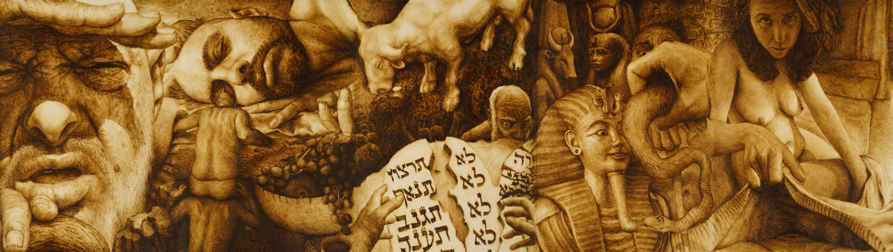

:Deep Painting
מדו לתלת לדו לתלת לדו לתלת
- מדו לתלת
בעולם העתיק, מסורת הציור החלה מתפיסה דו-מימדית - סימבולית, נוקשה, שטוחה וטקסטואלית במהותה, שמטרתה העברת מסר, כמו במצרים הפרעונית. בתהליך איטי שנמשך מאות שנים, הציור העתיק הלך והשתחרר ממסורת זו ועבר לייצוג יותר ויותר תלת-מימדי, נטורליסטי ומימטי. ניתן לעקוב אחר מגמה זו אם נבחן מעט מהציורים שנקברו ונשתמרו: מציורי התרבות המינואית (שנקברו בקנוסוס שבכרתים ובאקרוטירי שבסנטוריני), במעבר אל העולם היווני (הציורים הקבורים בוורגינה, יוון), ועד לדקדנס הרומי. בציור הרומי ניתן כבר להבחין בייצוג תלת-מימדי הכולל שימוש באור וצל - למשל בדיוקנאות המומיות מפיום, ואף סצנות תלת-מימדיות שלמות, הכוללות העמדות גוף מגוונות וחושניות - כמו בפומפיי ובשיא אמנות הפסיפס. אך שם - ההתקדמות נבלמה. המשבר שיצר הדקדנס הביא עימו את מלחמות הברברים ואת הנצרות, והאמנות זנחה במהירות את המימזיס של העולם התלת-מימדי, ברגרסיה אל העולם הדו-מימדי, השפתי והסימבולי - בו עיקר מטרתה היה (שוב) העברת מסר. - מדו לתלת - סיבוב שני
ושוב, בתהליך מאבק איטי שנפרש על פני מאות שנים, אשר החל ברנסאנס אך לא הסתיים בו, הציור הלך ופרץ החוצה מכלא העולם הדו-מימדי הדוגמטי. המאסטרים הגדולים נאבקו לייצג ברמות הולכות וגוברות של מימזיס וחושניוּת את העולם התלת-מימדי. שיאה של מגמה זו הגיע בציור האקדמי הצרפתי בסוף המאה ה-19, שלאחר הריאליזם של קורבה השיג רמת דיוק כמעט צילומית, תוך שקיעה גוברת בחושניות דקדנטית. בוגרו הוא למשל צייר מושלם (אולי מדי), ללא שום טעויות רישום מהסוג שניתן לאתר אפילו אצל המאסטרים הגדולים ביותר. אך שם המגמה התלת-מימדית בציור נעצרה שוב, ולא מצאה דרך לפרוץ קדימה.
והנה, שלא במפתיע, גם הפעם הברבריזציה הכוללת של התרבות לא איחרה לבוא בעקבות הדקדנס. תוצאותיה היו שתי מלחמות עולם ועליית נצרות אמנותית חדשה, ששוב הובילה הדרדרות מהירה לרמה מימטית נמוכה במיוחד. הזרם המרכזי בציור נסוג אל העולם הדו-מימדי השטוח - והטקסטואלי והימי-ביניימי במהותו: אם בעיסוק בשפת הציור עצמה, ואם (בהמשך ההידרדרות) בציור שהגיונו סימבולי, או אף כזה שמטרתו להעביר מסר. מסר זה היה לא פעם מוסרני ומטיפני, כמיטב מסורת הדוֹגמה הכנסייתית, תוך האלהת הקורבנוּת. כל זאת, בעזרת מעמד הכמרים החדש של הוד קדושת האמנות - האוצרים - שכמו בימי הביניים זכו לעדנה על חשבון כוחם ועצמאותם של האמנים, כשכולם כפופים לקונפורמיות המסרים ה"נכונים" המוצגים בקתדרלות החדשות, הלא הן המוזיאונים.
אך אם באמת לא ניתן יותר ליצור ייצוג תלת-מימדי שהוא לא צילום אפיגוני במהותו, אזי לאן ניתן להמשיך מכאן בכיוון המימטי? אחורה? האם עוד ניתן בכלל לנוע קדימה במגמה התלת-מימדית שהניעה את התפתחות הציור המערבי? או שמא היא הגיעה, לאחר אלפי שנות מאבק מימטי, לקיצה? - מדו לתלת - סיבוב שלישי
חשיבותה של היצירה הנוכחית, כאבן דרך בתולדות הציור המערבי, היא בפריצת המחסום שבו נתקלה האמנות המערבית פעמיים ונסוגה - והוא מחסום המבט הדו-מימדי. גם בשיאן של מגמות התלת-מימד בציור, על כל הישגיהן, הציור נותר תמיד דו-מימדי מבחינת נקודת המבט. נקודת מבט זו מוקמה באופן שגור חיצונית לסצנה המצוירת - וממול לה. לכן נשאר בציור התלת-מימדי רכיב מובנה של דו-מימדיות מלאכותית, שהוא כשל מימטי. בהתאם לתפיסה הקנטיאנית, הצופה בציור - כמו גם הצייר הצופה בעולם - נותרו מחוץ לסצנה ולעולם המיוצג. נקודת מבטם נמצאת בפער תמידי ועקרוני מול העולם, ולא ממוקמת בתוך עומק העולם התלת-מימדי עצמו. אך לא כך אנו חיים במציאות, ולא כך אנו תופסים אותה. אנו דמויות בתוך העולם, ולא ציירים עם כַּן או צופים המביטים בו מבחוץ. נקודת המבט הדומיננטית שלנו היא מתוך הסצנה והסיטואציה, כי היא נקודת מבט של דמות מתוכה. לפיכך תפיסתינו החזותית מסוגלת לטייל בתנועה תלת-מימדית חופשית בכל כיוון, מבלי להיות כלואה רק ב-"עמדת המתבונן מהצד".
מהות היצירה הנוכחית היא פריצת הדרך של שבירת הקיר הרביעי של הציור, שהתקבע כמובן מאליו, עד כדי חוסר מודעות שלנו לעצם קיומו. ואכן, ברגע שמוסר מעליו הלוט, מתרחשת מהפכה חזותית ותפיסתית. נוצרת תודעה ציורית חדשה לחלוטין בתולדות האמנות - שמביאה עמה ים של אפשרויות ייצוג חדשניות, שלא היו נגישות למאסטרים הגדולים. לפתע, נפתחים אינספור כיוונים - תרתי משמע - שחושפים את מוגבלותה וצרותה של נקודת המבט הקודמת. היצירה הנוכחית מדגימה את כוחה של מהפכה זו דווקא מתוך הבחירה בייצוג של הסצנות המיוצגות והלעוסות ביותר - אך גם העמוקות ביותר - בתולדות האמנות, שלכאורה לא ניתן לחדש בהן ובייצוגן המימטי דבר. כך היא מדגימה בצורה שיטתית את כוחן של נקודות המבט בהבניית משמעות הסצנה, ומאפשרת התבוננות בסיפור המכונן של תרבותינו בצורה חדשה לחלוטין.
המתודה של היצירה היא פשוטה במהותה. עבור כל סצנה נבחרה נקודת מבט שממצה את משמעותה באופן העמוק ביותר, ולעיתים בעזרת ריבוי נקודות מבט בתוך סצנה אחת:
המבט הסקסואלי
כניגוד לסצנת בריאת האדם בקפלה הסיסטינית, סצנת הבריאה היא דווקא בריאת האישה, כי זוהי בריאת המבט. המבט האינטר-סובייקטיבי הראשון נולד בהתנתקות מהצלע של אדם הראשון הרדום, ברגע של התעוררות הדדית: חיבור ממבט ראשון. לאחר מכן מוצגת התשוקה שמביאה לחטא הראשון כמבט מעלה אל הבלתי-המושג - שאינו יכול לראות את יעדו. במבט המיני אדם מביט מעלה אל האישה. האישה - אל העץ והתפוח. ואילו הנחש מלמעלה מביט עליהם בסתר. רק השילוב של משולש מבטים חלקיים זה חושף את האמת הנסתרת של המערכת הסקסואלית.
המבט לחיים ולמוות
השילוב הדואלי של מבטים משלימים והופכיים מאפשר לחשוף את שני צדיה של טרגדיית האלימות, הלמעלה והלמטה, אצל קין והבל. אך האדם העליון ואחיו שמתחתיו מוקפים מלמעלה ולמטה בנקודת המבט המוסרית - שנמצאת לפי הטקסט המקראי דווקא בשמיים ובאדמה. כך גם שני צדיה של הקטסטרופה השואתית, הפנים והחוץ, מכוּננים במבול בעזרת המבטים ההפוכים מבפנים ומבחוץ. מצד אחד, המבט של מי שמסתתר מוגן בבידוד בתיבה - ושואף אל החוץ. מולו מעומת המבט המשלים, של מי שנותר חשוף בחוץ ועיניו כלות אל הפנים, אך למעשה זוהי נקודת המבט הטובעת, שבה כבר לא ניצב אף אחד.
המבט המשפחתי
בסיפור העקידה, מוצגת המורכבות של המערכת ההורית בעזרת רשת של לא פחות מארבעה נקודות מבט הדדיות, בהן מועמד הצופה בנעליה של אחת הדמויות:
א. המבט של האב המסתיר את מבט הבן, אך נתקל בהשתקפות מבטו מהסכין.
ב. מבט הבן המקוטע והדיסוציאטיבי המציץ חלקית מתוך ההסתרה.
ג. נקודת המבט המלאכית החומלת, הרואה את הלא רואים.
ד. נקודת המבט של הקורבן האמיתי, מתוך הסבך, שהיא נקודת המבט שבה מבחינים במפתיע - זו של האיל שעינו מאחורי קרן השופר. בעל החיים אמנם לא ידבר, אך הוא בעל מבט.
בהמשך, בגניבת הברכות, מוצגת המערכת המשפחתית הסבוכה של ארבע הדמויות המשפחתיות הארכיטיפיות באמצעות מבט שהוא חתך מציאות רוחבי של היחסים. זהו חתך של האוהל, שרק מתוכו נגלית הסצנה כולה, על כל ההסתרות והעיוורון ההדדי שבה. לבסוף, יחסי הכוח, התחרות והקנאה מאופיינים במכירת יוסף דווקא כנקודת מבט אלכסונית - מלמעלה ומלמטה.
מבט הזרות של הגלות
מבטו של יוסף במבט הפתייני של אשת פוטיפר הזרה חצוי בין משיכה לרתיעה. הוא מקיף גם את פנים גופו הנראה מתוך החולצה הנמשכת ממנו, וגם את הגוף החשוף של המושכת. המִפתח נמתח באופן כמעט בלתי אפשרי עד כמעט 180 מעלות, בניסיון להשתחרר מלכידתו של המבט האחר. ולאחר התמודדות המבט עם הגוף המוחפץ והאסור, הוא מתמודד עם הפסל האסור: בפתיחת מכות מצרים מוצג המבט הקסום והמכושף, הנפעם מההחייאה הניסית של הטבע הדומם, ואילו בחטא העגל מוצגת שבירת הטקסט אל מול הטבע הדומם.
בשני הציורים המסכמים את התורה - ואת ספרי במדבר ודברים - התקריב הוא על המבט הפנטסטי שבעיני המתבונן. ראייה זו קשורה לשני חטאים שמנעו את הכניסה לארץ, והשאירו אותה כיישות בדיונית-דמיונית ולא ריאלית. המרגלים במדבר נחשפים בהצצה למבט החולם והסוריאליסטי שלהם בעיני הענקים הפנטסטיים, שמרתיעים אותם מהכניסה לארץ - "ושם ראינו את הנפילים בני ענק...ונהי בעינינו כחגבים וכן היינו בעיניהם". ולסיום, ספר דברים והתורה כולה נחתמים במבט האחרון של משה על הארץ המובטחת.
המבט הכוחני
הכיבוש והכניסה לארץ מיוצגים בנקודת המבט האינטימית הנכנסת פנימה, של המרגלים המסתתרים אצל רחב הזונה. ואילו השיבה של הכובש מן המלחמה בסיפור בת יפתח, מיוצגת באמצעות נקודת המבט של הסף עצמו - על חציית הסף. סיפור העיוורון של שמשון משקף את קריסת המבט מול הכוח: המבט האחרון של שמשון, לאחר שעינו האחת כבר נוקרה, מתכתב עם המבט האחרון בשמשון, דרך משקפת הצפייה במחזה, רגע לפני קריסת המבנה התיאטרלי על הצופים.
המבט ההפוך מתחת לחצאית, של בחורה בת המעמד הנמוך על גבר מבוגר, מציג את מבט המהגרת של רות. לעומתו, המבט הפוליטי של יחסי הכוחות בין מלך ונביא מוצג מתוך קריעת הבגד בקריעת המלוכה של שאול ושמואל, תוך חשיפת האמת העירומה. בהמשך, המבט בקלוז-אפ, שמבלבל בין ציור הנוף לציור הגוף - ובין הגדול לקטן והחזק לחלש - מאפיין את היפוך היוצרות במאבק בין דוד לגוליית. ואילו במשפט שלמה מוצג המבט מלמעלה של פעולת השלטון, במתחים האלכסוניים בין אכזריות ושרירותיות לצדק ורחמים שיוצר עולם המשפט.
לבסוף, חלק זה של היצירה נחתם בהתכתבות עם המבט הראשון. המבט הנבואי מוצג כהתעוררות מבריחה והירדמות בתחתיות ים, בסיפור יונה ורב החובל, מתוך גוף מופנם שהוא אנטיתזה לגוף המושלם והפרומתאי של אדם הראשון: בן אדם מה לך נרדם.
כך, באופן שיטתי וכמעט דידקטי, פורשת בפנינו היצירה כמה מהצירים הראשיים במרחב האפשרויות העשיר הטמון בשלב התלת-מימדי הבא אליו יכול הציור להתפתח במאבקו עתיק היומין, תוך חדירה עמוקה לטריטוריה ייצוגית לא נודעת. ואם זו לא מהפכה ציורית, מהי כן?
